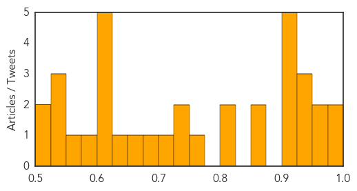

Unknown
30-Day Web Trend
1 alerts, 0 warnings

30-Day Twitter Trend
1 alerts, 0 warnings

Article Locations

Article Confidences
Top Articles:
- 0.996
- Plague outbreak kills 40 people in Madagascar
- 0.988
- Portugal declares end to deadly Legionnaire's disease outbreak
- 0.973
- Bird flu worries spread in Europe
- 0.971
- Portugal Legionnaires' outbreak kills 10, no new infections seen
- 0.948
- Plague outbreak in Madagascar kills 40
- 0.948
- Plague outbreak kills 40 in Madagascar: WHO
- 0.942
- Plague outbreak kills 40 in Madagascar: WHO
- 0.917
- Chicago Tribune
- 0.917
- Chicago Tribune
- 0.917
- Chicago Tribune
- 0.917
- Chicago Tribune
- 0.912
- Paralysis, muscle weakness strike 9 Colorado kids, CDC issues warning
- 0.866
- Police keep members of the media back as Portugal's former Socialist prime minister Socrates leaves the court inside a car in Lisbon
- 0.866
- Volcano erupts on Cabo Verde island of Fogo-PM
- 0.823
- Mice may lead to typhoid treatments
- 0.816
- Germany reports second case of bird flu - H5N8 found in wild bird
- 0.758
- Tenth Colorado child showing paralysis, muscle weakening
- 0.738
- Fears Government is concealing levels of A&E overcrowding
- 0.732
- Woman left unable to walk and speak after her Lyme disease went undiagnosed for 26 YEARS
- 0.712
- Australians flock to overseas Lyme disease treatment
- 0.693
- Knowing the Regulations for Visiting Patient in the Hospital
- 0.663
- Sargodha hospital death tolls climbs to 23
- 0.628
- Gujarat state's chief secretary visits jaundice-hit locality
- 0.624
- LNP to introduce Wait Time Guarantee for elective patients
- 0.624
- LNP to introduce Wait Time Guarantee for elective patients
- 0.624
- New bird flu case in Germany
- 0.619
- Health Ministry takes measures to ensure mine explosion victims get proper treatment
- 0.619
- Health Ministry takes measures to ensure mine explosion victims get proper treatment
- 0.598
- Mackay health service backs Qld Government's surgery guarantee plan
- 0.555
- COPD: The common, deadly and often overlooked illness
- 0.536
- Legionnaire’s disease outbreak declared over
- 0.529
- Virus that makes humans 'stupid' found
- 0.525
- Army establishes relief camps for drought-affected people
- 0.507
- Madiba neighbours fear disease outbreak
- 0.502
- Infant Mortality Rate: Mother of All Worries in Tamil Nadu
Top Tweets:
-
No tweets found for Nov 23, 2014
Mold/Fungal
30-Day Web Trend
6 alerts, 0 warnings
30-Day Twitter Trend
0 alerts, 0 warnings
Article Locations

Article Confidences

Top Articles:
-
No articles found for Nov 23, 2014
Top Tweets:
-
No tweets found for Nov 23, 2014